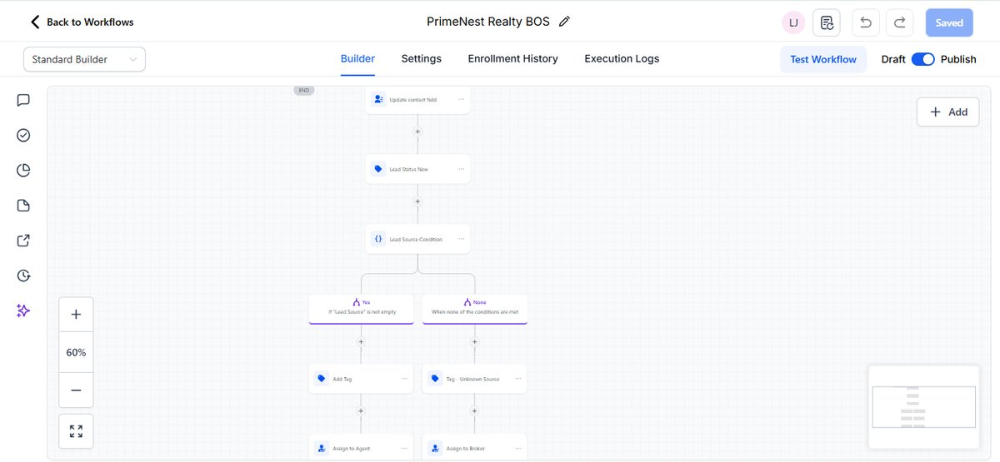
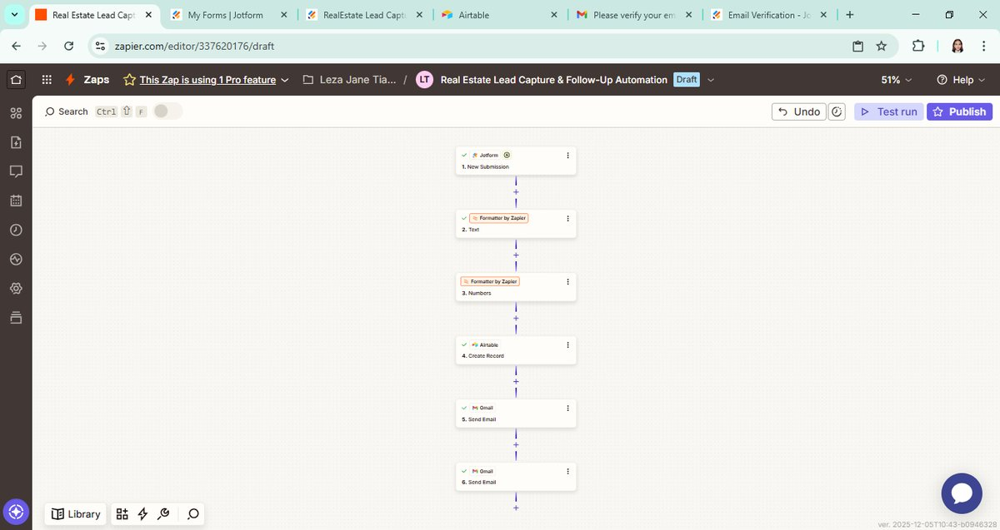
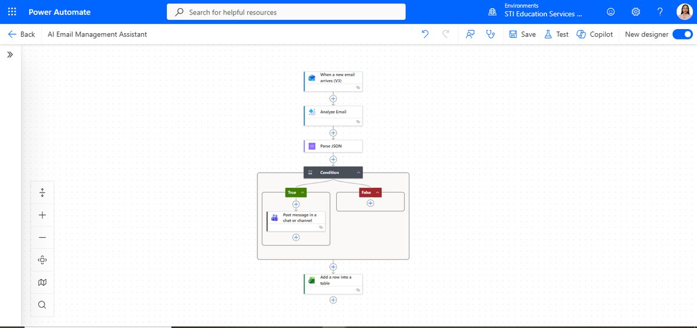

Leza Jane Tianzon
AI Automation Specialist building reliable, no-code workflows that replace manual busywork with systems that trigger, decide, and log on their own — across Power Automate, n8n, Zapier, Make.com, and GoHighLevel.
About
I design automation systems for businesses that are losing time — and leads — to manual, repetitive work. My background is in Information Systems, and I hold a teaching license, which shows up in how I build: every workflow is documented clearly enough that a non-technical team can trust it and hand it off.
Most of my work lives at the intersection of CRM operations and AI: reading incoming leads or emails, classifying them, routing them to the right person, and holding the process accountable with SLA tracking and escalation — so nothing important goes unanswered.
- Based in
- Philippines
- Focus
- Workflow & CRM automation, AI-assisted triage
- Education
- B.S. Information Systems, Sultan Kudarat State University
- Also
- Licensed Professional Teacher (LPT)
Services
AI Workflow Automation
End-to-end workflows that use AI to read, classify, and act on incoming data — so decisions that used to need a human get made instantly.
Microsoft Power Automate
Flows built on AI Builder, Outlook, Teams, and Excel — triaging inboxes, routing approvals, and logging everything automatically.
Make.com Automation
Visual, modular scenarios that connect your apps — forms, sheets, calendars, SMS — into one dependable pipeline.
n8n Workflows
Self-hosted or cloud automation with full control over logic, data, and integrations — ideal for custom, technical builds.
CRM Implementation
GoHighLevel and Airtable setups with lead routing, tagging, pipelines, and SLA tracking built in from day one.
AI Business Process Automation
Mapping a manual process end to end, then rebuilding it as a reliable system with AI handling the judgment calls.
Skills & Tools
Automation Platforms
Artificial Intelligence
CRM & Business Systems
Workspace
Selected Work

Primenest Realty — Broker Operating System
A multi-channel lead-intake system for a real estate brokerage. It tags, routes, and assigns every lead the moment it arrives — from web forms, replies, or Facebook Lead Ads — then actively tracks whether the agent responds in time, escalating to the broker automatically if a lead goes quiet.

Real Estate Lead Intake Automation
A 5-step Zapier workflow that takes a lead from form submission to a clean CRM record, an agent alert, and a personalized welcome message — with no manual step in between. Names and phone numbers are auto-formatted before they ever touch the CRM.

AI Email Triage & Logging System
An always-on flow that reads every incoming email, uses AI to judge its category and urgency, posts urgent items straight to Teams, and logs a structured record of every message to Excel — replacing manual inbox triage entirely.
Weekly Order Processing & Reporting
Automated recurring order processing and report generation, removing a weekly administrative task entirely.
Property Viewing Booking Automation
Booking requests auto-update Sheets, create Calendar events, and trigger SMS confirmations to clients.
AI Document Processing Workflow
Detects incoming documents, extracts text via OCR, and notifies the team once processing completes.
Why Work With Me
Business-Focused Solutions
I start from the business problem — lost leads, slow responses, manual busywork — and build the automation that solves it, not the other way around.
Reliable Automation
Workflows include guard conditions, error handling, and SLA checks so they keep running correctly — not just on day one, but every day after.
Clear Documentation
As a Licensed Professional Teacher, I document every flow so a non-technical team can understand it, trust it, and take it over if needed.
Continuous Learning
I'm actively completing certifications in AI and workflow automation, so the tools and techniques I use stay current, not just familiar.
Credentials
Certifications
- TESDA — AI Prompting for Automation, Level III Completed
- CompTIA — AI Essentials Completed
- Anthropic Academy — Claude AI & MCP In progress
- n8n Academy — Workflow Automation In progress
- TESDA — Data Collection & Annotation, Level II In progress
Education
- B.S. Information Systems SKSU–Isulan
- Diploma in Teaching, Social Studies SKSU–Access
- Licensed Professional Teacher (LPT) Licensed